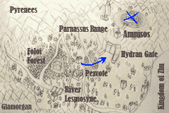

(smiles) ...In my opinion, of course.
If Polonius is present
It was then that I realized in full, what a horrible person I am.
[Pericles gains 1 Strength.]
Decades ago, I returned from the Tartaran
frontlines, having made a name for myself.
For my deeds, a piece of Glamorgan soil was
split and granted to me to rule over.
...But yeah, sometimes I forget how
busy you are these days, lassie.
Real sorry about that.
O-Oh, but I really should be going. I was in a hurry to... Uhh...
[Jane and Conan gain C-rank support with each other.]
[Jane and Dahl gain C-rank support with each other.]
(Zaccheus pounds his fist.)
Gaah! This is so vexing!
Hmph... But a true noble never gives
up!
I'll keep close on the battlefield and
put my many talents to her aid.
She'll take notice and surely find
herself falling for me promptly.
(smirks) Hahaha... Ahh, Zaccheus, you are
just too good.
[Zaccheus gains a one-sided B-rank support with Teresa.]
[Simeon and Teresa gain C-rank support with each other.]
[Pluto and Órlaith gain C-rank support with each other.]
If Nicaea is alive
If you agree
[All of Laertes' stats increase by 2.]
If you refuse
If you accept
If you refuse
If you accept
If you refuse
Plato learns the following ability:
Blood Bounty
2x growth
rates, but 1/2 exp gain.
(smiles) ...Thanks.
Seriously.
You make me think we were
never so bad after all.
(scowls) Now it's time for your just
punishment!
I have a friend, you see.
His name escapes me...
He does not fly, but neither does he
walk.
He means well, but he's too
loose-tongued to keep a secret,
and I wouldn't recommend shaking his
hand. Sometimes he is harmless,
but other times he kills with only a
touch.
What is my friend's name?
Rabbit!
Grasshopper!
Frog!
Snake!
Shark!
Uh... Robert?
If you answer correctly (Frog)
Ahh, do forgive me. There is nothing I
enjoy as much as a good riddle.
(serious) Speaking of riddles... I believe I may have
figured yours out.
You're those brave folks rising up in
revolt, are you not?
The inquisition is trying to keep the news
from spreading... and failing.
Incidentally, I don't like them very much.
And the feeling is mutual, I assure you.
You have my full support - and the aid
of my spells, if you want it.
(smiles) Oh, but before we go...
Since you answered correctly,
a small reward, from me to you.
Ohh, go ahead, don't be shy.
I have more money than I know what to
do with. Please, take it!
(She gives the visitor 1500 gold.)
If you answer incorrectly
(smiles) Ahh, do forgive me. There is nothing I
enjoy as much as a good riddle.
(serious) Speaking of riddles... I believe I may have
figured yours out.
You're those brave folks rising up in
revolt, are you not?
The inquisition is trying to keep the news
from spreading... and failing.
Incidentally, I don't like them very much.
And the feeling is mutual, I assure you.
You have my full support - and the aid
of my spells, if you want it.
(smiles) ...What? Of course I'm going to join up
even though your answer was wrong!
The riddle was just a bit of fun.
Don't concern yourself with it.
(serious) ...No, I won't tell you the answer.
You have to figure it out yourself.
(Hippalus leaves.)
What Jingyi means with this cruel little
jest is that we're not going anywhere.
We gave our word we would aid you, and
aid you we shall.
Moreover, we have made efforts to stay
informed while in Tartaros.
We already knew of the truce before we
met.
...Huh? Lady Apate! Are you all right?!
(Dolus V starts.)
Ah!
Jason
A fighter-for-hire with a finely tuned sense for money and opportunity.
Coronis
An Amnisian noble who was forced to go into hiding after being accused of heresy. Possessed of a deeply curious mind.
Plato
A swordsman known to some as the Blood Demon.
Eudoxus
A disgraced merchant trying to rebuild his fortune through vile methods.
Hippalus
A merchant whose shoulders are sagged not due to age, but guilt.
Merchant
A merchant carrying goods
inside a fragile wagon.
Ruffian
A highway robber under orders from the crook Eudoxus.